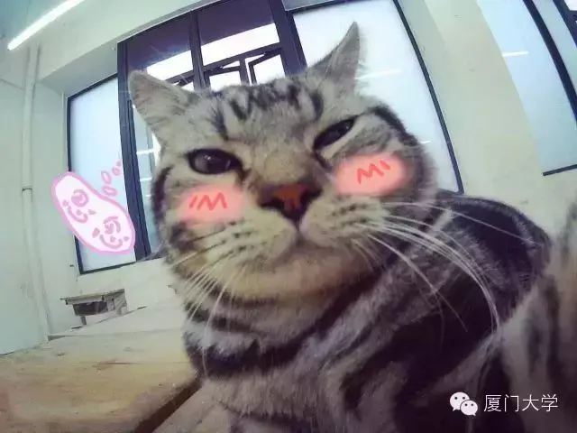
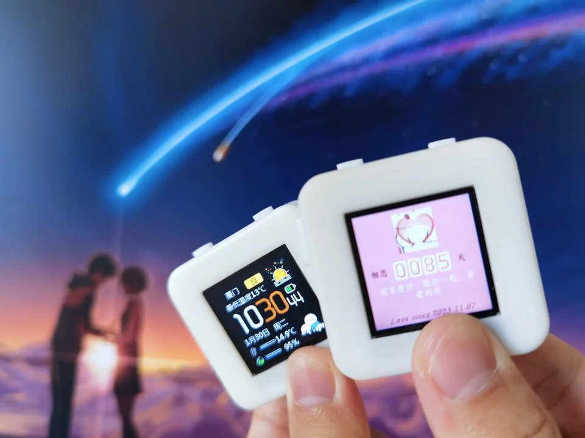
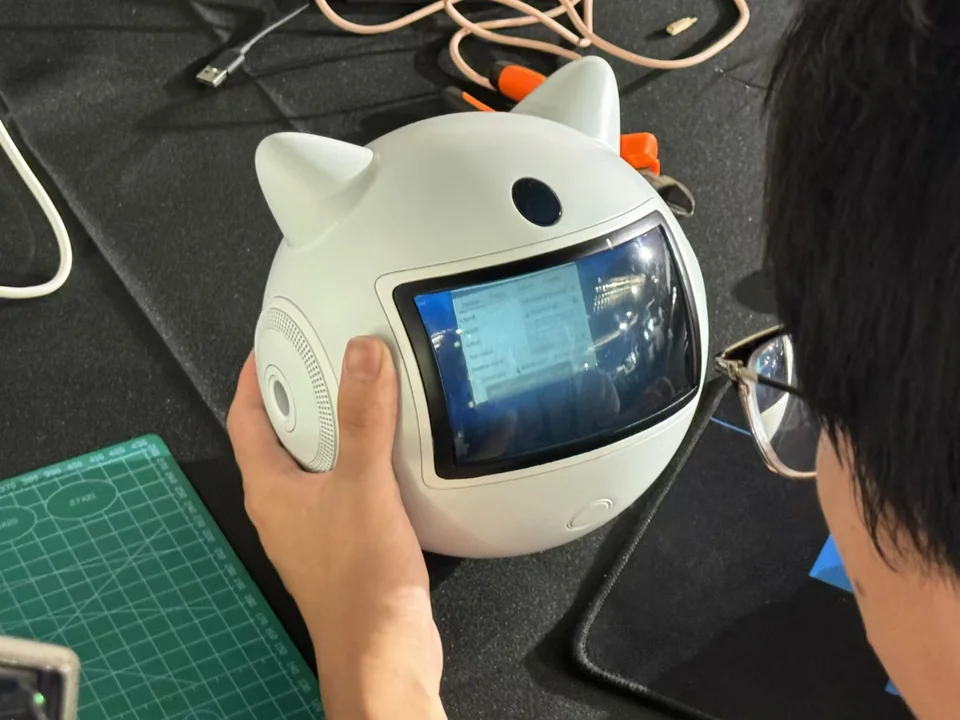

宠物自拍器
“这太有创意，太有创意了！”美国国务卿克里对着自己的自拍照连连赞叹。
XMU MAKER 2015 —
厦门大学创客协会创办于2015年11月，由2012级学长吴帝宏和热爱创客的同学一同创办。负责组织Google Devfest活动，中美青年创客大赛厦大校赛，为厦大的创客们提供创造空间，定期组织对创客们的技术培训。
如果你热爱创造，热爱技术，无论你是否已有基础，只要你肯用心学习，欢迎加入我们！

“这太有创意，太有创意了！”美国国务卿克里对着自己的自拍照连连赞叹。

异地固然有距离，但爱没学过地理

为青春期女生提供一个有效的情绪管理工具